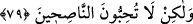

sapsarıydı. Sâlih (a.s.)’ın doğru söylediğini ve artık azabın kesin olarak başlarına
geleceğini anladılar.
Peygamberlerini yakalayıp öldürmek istedilerse de o, onlardan kaçıp bir yere
gizlendi. Onu bulamadılar. Sâlih (a.s.)’ın gizlendiği yeri göstermeleri için arkadaşlarına
eziyet etmeye başladılar.
Cuma günü olunca yüzleri, kan ile boyanmış gibi kıpkırmızı oldu. Hepsi bağırmaya,
ağlayıp inleşmeye başladılar. Artık azabın kendilerine iyice yaklaştığını bildiler.
Yüzlerinde beliren durumu herkes birbirine haber veriyordu.
Cumartesi sabahı yüzleri ziftle boyanmışcasına simsiyah kesildi. “Azab muhakkak
geldi.” diye bağırdılar. O gün akşam olunca Sâlih (a.s.), kendisine inananlarla beraber
kavminin arasından ayrılarak Şam’a gelip Filistin’e yerleşti.
Dördüncü gün olan Pazar günü kuşluk vakti olunca Semûd kavmi, yırtıcı hayvanlar
kendilerine zarar vermesin diye acı olan öd ağacının yağı ile vücudlarını mumyaladılar.
Hayvan derileriyle kefenlenerek yere yattılar. Gözlerini bir göğe bir yere çeviriyorlar
ve azabın hangi yönden geleceğini bilmiyorlardı. Derken gökten yıldırımlardan ve çok
gürültülü seslerden ibâret şiddetli bir çığlık, yerden de bir sarsıntı, deprem geliverdi.
Göğüslerindeki kalplerini koparıp attı. Büyük küçük hepsi helâk olup gitti.
“Azabın geleceğini gösteren mezkûr alametleri görmek, mükellefi imânâ mecbur eder.
Bunlardan sonra küfrü üzere israr edecek akıllı bir kimsenin kalması mümkün müdür?”
denilirse, derim ki: Semûd kavmi, azabın geleceğini gösteren alametleri gördüklerinde
artık mükellefiyet sınırından çıkmış oldular. Bu sebeple bundan sonraki tevbeleri kabul
olunmadı.
79. Salih o zaman onlardan yüz çevirdi ve şöyle dedi: Ey kavmim! Andolsun ki
ben size Rabbimin vahyettiklerini tebliğ ettim ve size öğüt verdim; fakat siz öğüt
verenleri sevmiyorsunuz.
“Sâlih” (a.s.), kavminin başına gelen helâki müşahede ettikten sonra üzülerek ve
imansız olarak yok olup gitmelerine acıyarak ve onlar için mahzun olarak “onlardan
yüz çevirdi ve: “Ey kavmim, ben size Rabb’imin gönderdiği gerçekleri tebliğ ettim”
yerine getirmekle emrolunduğum Rabb’imin elçiliğini yerine getirdim “ve” dâvet
zamanında teşvik ederek ve korkutarak “size öğüt verdim” sizin için elimden geleni
yaptım “fakat siz öğüt verenleri sevmiyorsunuz.” dedi.” Yani sizin durumunuz, size
öğüt verenlerle alay etmekti. Çünkü nasihat edenin sözü ağır ve hak acıdır. Bunlar,
kabule yanaşmayanların içinde aşırı nefret ve kin uyandırır. Nitekim bir şair şöyle der:
Sizin peşinizden nice nasihatlar ettim!